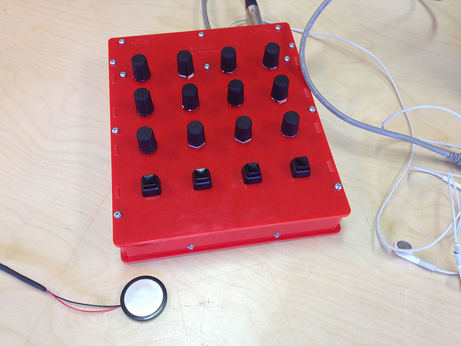

I also find this important to be condensed.
There are some info on Potentiometers 
How to add knobs to Axoloti board (Not in patcher)
anon5189335
#4
Thanks 😄 What is that White board With holes in? Do i need one? And where do i get one ? 👾
alexk
#5
read the google groups post from @johannes . Latching is a functionality of a knob? Or am i misunderstanding. Gonna read up on it, although I am not sure I want to use latching knobs for my stuff anyway (rather use endless knob with led display)
How can I access Google Group discussions ?
Wouldn't it make sense to migrate such information examples to here on the board if this platform would be official guide, troubleshooting and discussions ?
johannes
#8
That is a "solderless breadboard". It can be practical for experimentation, but not for final mounting.
"gpio/in/analog" does not do latching, only direct readout of the voltage on the corresponding gpio pad.
The axoloti-user google group is deprecated. This is the community forum.
A hardware hacking guide would make sense yes, but I have not found the time to write one. If someone takes the initiative, I'll turn it into a wiki post in the user guide section.
anon5189335
#9

I would really like to build something like this. This is really, really nice. Is it possible to add more than 16 knobs?
ndlopes
#10
I've just got the final interface...
{kind=link}
{kind=link}
1st step: add some Pin/out terminal connectors to the Axo board, in order to minimize soldering...
janvantomme
#12
It's possible to add more knobs, but you'll need to design an extra circuit for that.
anon5189335
#14
Thank you for the posts 
The IKEA construction looks awesome. I look forward to build something on my own, but I still need to understand it a bit better, which holes to attach the knobs to, etc..
ndlopes
#15
About the holes: check http://community.axoloti.com/t/official-pin-out-ports-documentation/202/4
Kalle
#17
Is there anyone who have a Schematic over a circuit so i could add cv in and out @johannes Sorry for hijjack jaf
apeirophobe
#19
That looks great! May I ask where you got the white connectors that are attached to the GPIO pins? I'm trying to figure out the best way to solder my pots and switches to the Axoloti. Do I solder them directly to the board or as I am assuming you have done here: use some interface between the Axoloti and the pots/switches. Is that interface soldered to the board? How do the wires connect to it? Sorry for all noob questions!
ndlopes
#20
Hi,
I've just added some PCB terminal connectors (there are several types and forms).
Got them from a local electronics store, but you can find them easily online (look at ebay for instance: http://www.ebay.co.uk/itm/2-13-Ways-Male-Female-PCB-Header-Terminal-Housing-PC-Computer-Connector-/231704839431?var=&hash=item35f2af4507:m:mdEPLBdqhQUh49L_8JRLWQw)
The wires are connected directly to the female parts of the connectors. No extra board were used (although it is probably a good idea to have one).
I've just followed the instructions in http://community.axoloti.com/t/official-pin-out-ports-documentation/202/4
I'm also a noob 
apeirophobe
#21
Thank you for the links ... much appreciated. So are those PCB terminal connectors soldered to the Axoloti or do they magically snap-on?